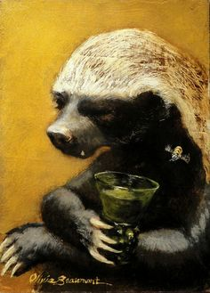

Feeding:
Because of their honey badgers unique diet the honey badger typically has a hard time getting food. A typical honey badger orders a pasta from a takeaway via online delivery services or prepares a microwave ready meal. Richer honey badgers may opt to eat out at an upmarket Italian restaurant instead, if they can get a reservation.
Drinking:
The honey badger likes to drink alcoholic drinks, and will take every opportunity to get smashed. Be careful when going out drinking with the honey badger, they are loathe to buy rounds for everybody.
Hunting:
Honey badgers a vicious creatures, and hunt smaller creatures. Typically they hunt foxes in packs on horseback, utilising foxhounds to chase down and wear out the prey. Fox-hunting was reserved for upper class honey badgers, until it was banned in 2004.
Sleeping:
As nocturnal creatures, honey badgers are extremely secretive and difficult to observe in the wild. They sleep most of the day, curling up into a ball to protect their face and belly.